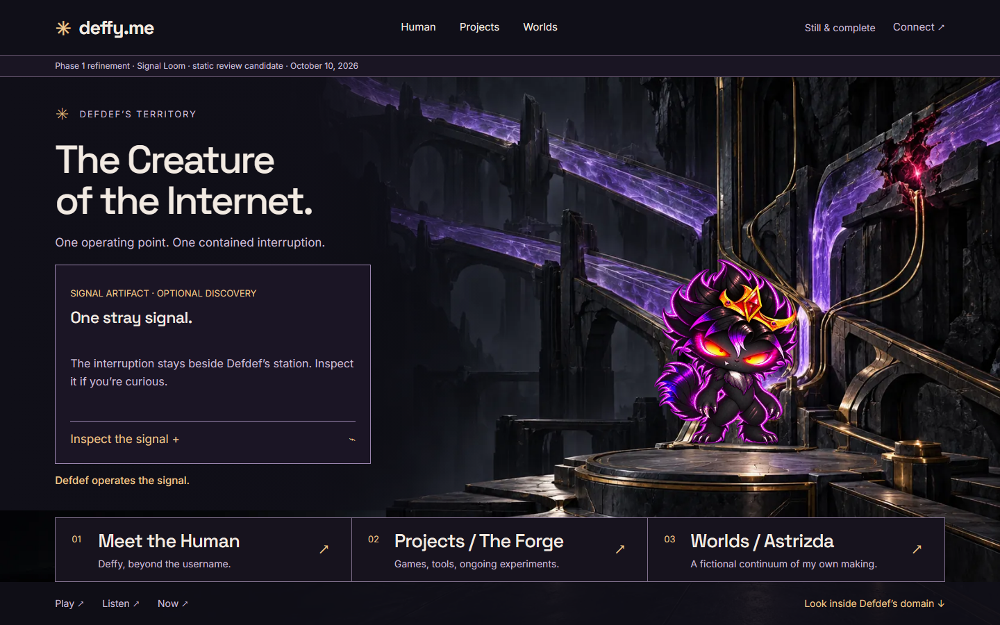
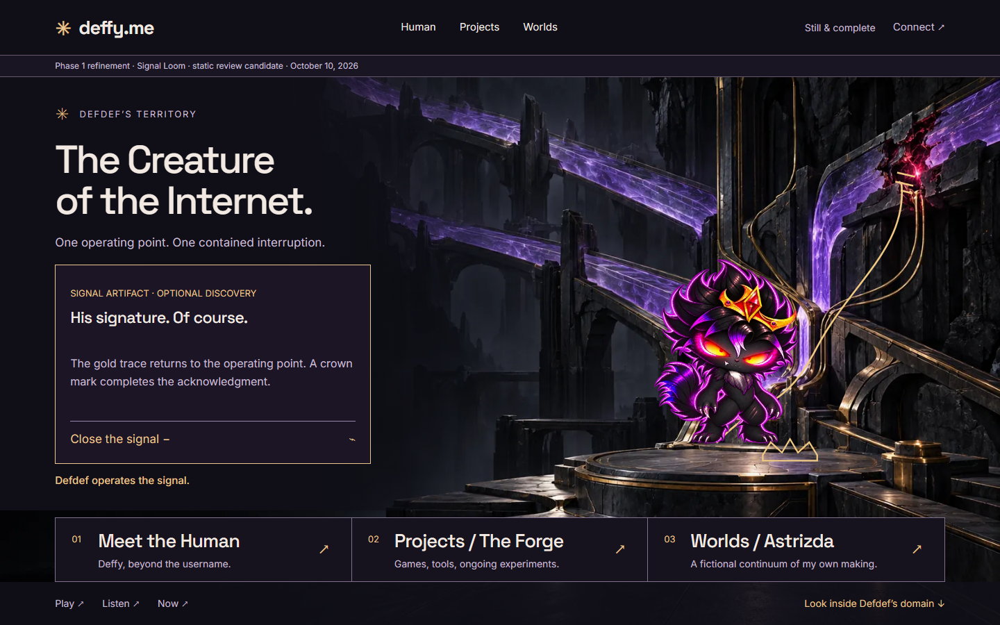

Loom · domain idle
Frozen refinement capture.
Comparison sheet · 1440×900
Frozen Signal Loom captures (left) against the fusion correction (right). Same environment, same character art; only localized SVG overlays differ.

Frozen refinement capture.

Stepped anomaly over the painted fracture; dim claw junction; contact shadow.

Frozen refinement capture.

Aligned anomaly, floor trace, lit claw junction and crown stamp.